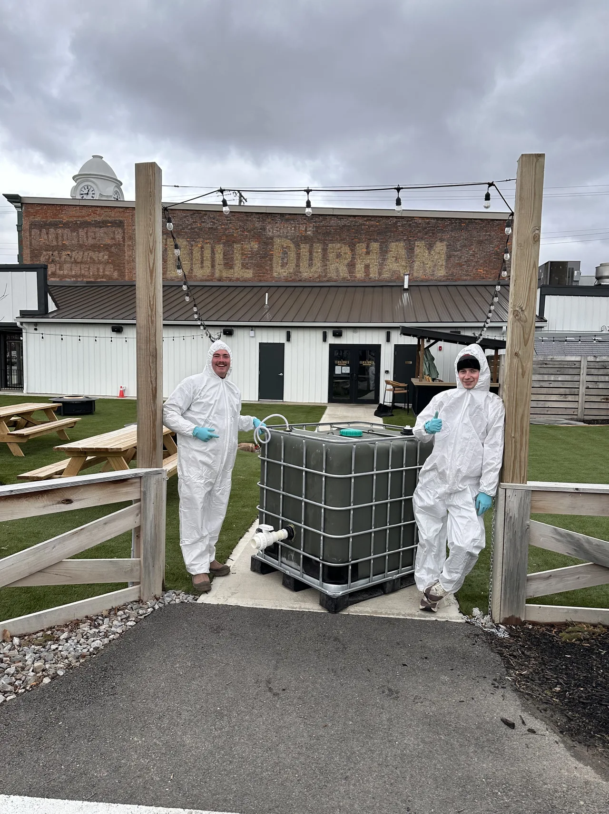

A 90-day monitoring pilot at three sites
Before anyone installs a digester, we measure what your waste actually does. Phase 1 puts a camera on the container, reconciles every invoice line against what it saw, and ends with a straight answer about whether a digester makes sense for you.
Ninety days is not a round number. A performance-based waste audit — the manual alternative — samples for 60 to 90 days. Hauling invoices run monthly, and three full cycles is the least that lets us reconcile a pattern against a contract rather than an anomaly against a month.
-
Site survey and scoping
Before day 1 · about two weeks
We walk the site with your facilities lead and map what is actually there: every container, its size, its service frequency, and what goes into it. We read your hauling contract and the last twelve months of invoices.
You keep the container inventory and the contract summary at the end of this stage whether or not you continue.
We need: site access, your hauling contract, twelve months of invoices.
-
Install and baseline
Day 1 · a day per container, then fourteen days
We mount an edge camera at each monitored container. Faces and plates are blurred on the device, before any image leaves the site — that is how the system is built, not a setting.
The first fourteen days are a baseline. We change nothing about your service, so everything after is measured against your real starting point.
Downtime to your operation: none.
-
Monitored operation
Days 1–90 · monthly report, findings as they occur
Fill level is estimated continuously and pickup events are detected on the device. Every invoice line is reconciled against what the camera actually saw.
Findings arrive as they are found, not in a report at the end. Each one carries the evidence that produced it, so you can check our work rather than take our word for it.
-
Findings and action
Rolling, from roughly day 30
Over-servicing and under-servicing flags, right-sizing options with the dollar figure attached, and — where your contract allows it — a drafted renegotiation or fee-dispute letter grounded in your own data.
Nothing is sent to your hauler without your explicit approval. You decide what to act on; we do not act on your behalf.
-
Decision
Day 90
A closeout packet: the measured record, the savings actually realised, and an honest read on whether an on-site digester makes sense for your waste stream — including if the answer is no.
Sites where the numbers work move to a digester scoping conversation. Sites where they do not keep the data and the recommendations, and we say so plainly.
Phase 2 — the digester deployment — is scoped only for sites where Phase 1 shows the numbers work. We would rather tell you it doesn't than sell you one that won't pay for itself.
Categories, not a schema
Everything on this list is something the system measures today. Nothing aspirational is on it.
From the container
- Container fill percentage, estimated continuously
- Pickup events, detected on the device
- Bag count and container-level compliance flags
- Camera imagery, with faces and licence plates blurred on the device before anything leaves the site
From your paperwork
- Hauling contract terms — disposal cost, service frequency, cancellation and auto-renewal
- Hauler invoices, parsed line by line into a structured ledger
- Tipping-ticket scale data, where the site has it
Derived
- Fill-of-haul and the WHES score
- Over-servicing and under-servicing flags, each with its supporting evidence
- Right-sizing recommendations with a projected dollar impact
Six things that can fail
Success criteria that cannot fail are marketing. These can all fail, which is what makes them worth publishing.
-
Data completeness
At least 95% of expected telemetry records captured across the 90 days, per site.
-
Estimate accuracy
Fill estimates agree with physical ground-truth checks within the tolerance stated in the pilot agreement, verified by scheduled manual audits during the window.
-
At least one quantified finding per site
An over-service, under-service, contract or invoice discrepancy with a dollar figure that reconciles against your own invoices.
-
Privacy verification
Zero unblurred faces or licence plates in any egressed frame, verified by audit of the stored record at closeout.
-
Host-verifiable savings
Any savings claimed at closeout are reproducible by you from your own invoices, without our software.
-
A decision, delivered
A closeout packet with a clear graduate or do-not-graduate recommendation, and the reasoning behind it.
Yours, not access to ours
- The container inventory and contract summary from the survey — yours at the end of that stage, regardless of what happens next
- A monthly report for each of the three months
- Every finding, with its evidence — the claim and the frames or invoice lines that produced it
- Drafted renegotiation, frequency-reduction and fee-dispute letters, ready to send under your own letterhead. Nothing sends without your click
- Your data, exported, at any time and at the end — the raw record, not a summary
- A written go / no-go on an on-site digester, including the reasoning if the answer is no
- No obligation. Phase 1 does not commit you to Phase 2
- Your name stays yours. We do not publish a host's name, logo, or site details without written permission. If you would rather we never mention you, that is a normal answer and it does not change anything about the pilot
What we've built

Throughput, footprint, retention time, biogas yield, methane content, digestate output, utility connections, and commissioning timelines are available on request under NDA.